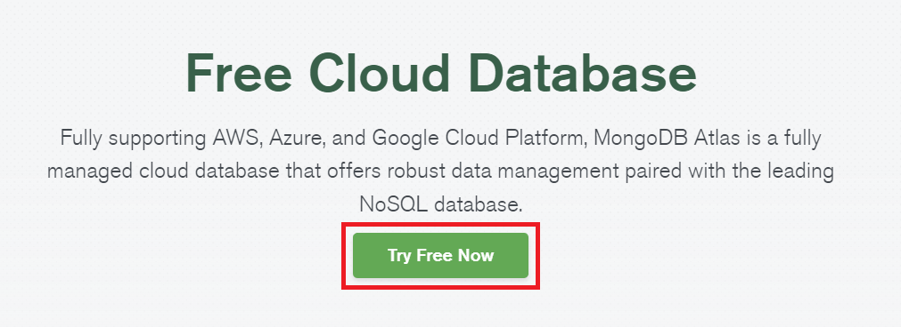

MongoDB
MongoDB is a popular NoSQL database that can be run on the cloud. MongoDB offers a fully free basic cloud database that you can use how you wish, and works with OYOclass' Python3 Editor.
This is a step-by-step guide on setting up your own free cloud Mongo instance.
Creating an Account
First, go to Mongo's Free Cloud Database page, and click on the Try Free Now button:

You will then be taken to a small signup form. You can leave the Company field blank, but you need to fill in your First Name, Last Name, Email, and Password. Agree to the Terms of Service and finish creating your account:

You will be required to confirm your email address. Open up your email account and click on the Verify Email button when you receieve the email:

Creating Your Database
Once you create an account with the link above, we need to actually create a database. To do this, we can select the following options during account creation:

Then when asked which database type we want, we will choose M0 because it is free:

Now, the last step of the basic setup is to create a user in the database. This is different from your Mongo account, this is an account you define inside your own database. Choose any username and password you want, but don't forget it. We will need the username and password later to connect to the database:

Setting Up Your Database to Work With Python3 Editor
Now that we have a fully running Mongo cloud database, we need to make it so Python3 Editor is allowed to connect to it. To do this, we need to do one more thing:
Click on Network Access on the left side of your screen in MongoDB Cloud, then click on Add IP Address:

In the window that pops up, click on ALLOW ACCESS FROM ANYWHERE then click Confirm:

Congratulations! You have successfully set up your Mongo cloud instance to work properly via remote connection. For a guide on how to get started using your database, check out the Python3 Editor Docs.